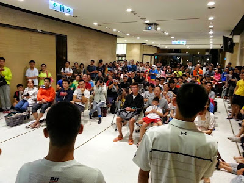

新書發表會：我們只是轉譯者

下大雨的日子，你們還願意來聽我們分享，謝謝各位讀者的支持。很抱歉誠品書店的空間有限，讓你們站著或坐在地上。看到在場的每一個臉孔，都讓人感動。希望你們都帶著自己想獲得的知識回家，若因時間沒有回答到你的問題，只要跟本書有關，都可以在下面留言提問，能力所及會盡量回答。
分享的感覺很好，但我想強調：這些知識不屬於我們兩位作者，我們只是站在巨人的肩膀上(運動科學家們)，轉化他們的研究，把它落實在跑步上面，再書寫成冊。我們做的，只是轉化的工作而已，真正了不起的是背後偉大的運動科學家：Jack Daniels, Nicholas Romanov, and Tudor Bompa。我們只是轉譯者。雖然這份工作也充滿了掙扎與不少煎熬，但真正偉大的還是前賢的努力。
他們花了大半輩子，找到人體與自然的規律，再把它整理出來……所以我們在書寫整本書的態度是：確定科學家們所找到的自然規律是什麼，再順應自然。
再次謝謝各位讀者的參與，有你們的支持，我們才有動力一直研究、轉化與書寫下去。

==備註【分享會的五個主題】==
一、作者簡介
二、為什麼寫這本書？這本書是在解決什麼問題？
◎身邊有許多跑友迷信跑量，但他們跑量很大卻沒有進步，為什麼？
◎跑步的體能如何練得更穩固？
◎為什麼跑者要練肌力？如何鍛鍊出跑馬的強韌肌力？
◎跑步有標準動作嗎？不容易受傷，效率與速度兼備的跑步技術是什麼？
◎意志力該怎麼練？
三、馬拉松不是跑就好了嗎？為什麼要學這麼多東西？
◎為了避免受傷
◎為了跑得更久
◎為了跑得更快
◎為了能一輩子跑下去
其中也想談一談我們心目中對「跑步家」的想像：跑得長長久久，一生都對跑步樂此不疲，獲得身心滿足！
四、說明書中為不同需求的跑者提供訓練計畫：
◎18 週初馬完賽／20 週全馬破 5／22 週全馬破 4／24 週全馬破 3
五、你希望在賽道上被拍到什麼樣的照片？
六、Q&A